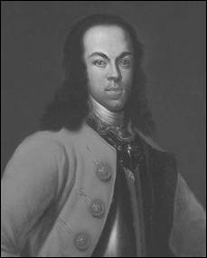

Страницы авторов "Тёмного леса"
Литературный Кисловодск и окрестности
Пишите нам! temnyjles@narod.ru
| Жена Петра I Евдокия Федоровна Лопухина |
| 26-летний Петр I. Портрет кисти Кнеллера, написанный в Утрехте (Англия) в 1698 году. |
| Сподвижник Петра I Федор Ромодановский |
| Анна Монс |
| Один из живописных моментов Полтавской битвы. |
| Вторая жена Петра Великого Екатерина I | |
| Светлейший Александр Меншиков |
| Суздальский Покровский монастырь, где содержалась Евдокия |
|  | Царевич Алексей Петрович |
| Новодевичий монастырь в Москве |
| Плакат фильма"Петр Первый", 1937 г. |
| Галерея усатых героев | |||||
| Петр I | Сталин | Фюрер | Бармалей | Тараканище |
| Евдокия Лопухина: "Бог дал мне познать истинную цену величия счастья земного". |
| Вид на Московское Сити от "Палат Лопухиной" Новодевичьего монастыря |
{1} Простой крестьянин из фильма "Чапаев" жалуется на жизнь: "Белые пришли - грабят, красные пришли - тоже грабят, ну куда бедному крестьянину податься...".
{2} Тимошка - Тимофей Анкудинов (1617-1654), международный авантюрист, поэт и самозванец, человек, по отзывам современников, очень талантливый, знавший много иностранных языков и выдававший себя за царевича Ивана Шуйского, мифического сына царя Василия Шуйского. Длительное время, живя в Европе, посещал и был принят многими королевскими дворами. Тимошка казнен в Москве в 1654 году через четвертование.
{3} Красной нитью пронизана российская история появлением самозванства, расцвет которого пришелся на Смутное время,продолжился в эпоху дворцовых переворотов и легким эхом откликается и в наши дни. Четыре десятка Петров III, семь царевичей Алексеев Петровичей, пять Лжедмитриев, четверо Лжеивашек (лже детей Лжедмитрия). Наиболее известный - Лжедмитрий I, единственный среди самозванцев, кому удалось занять российский трон и удерживать его в течение 10 месяцев.
{4} Петр III (1728-1762) российский император, представитель Гольштейн-Готторпской династии, внук Петра I. В браке с Екатериной II. После полугодового царствования умер в результате государственного переворота в 1762 году. По официальной версии - от геморроидальных колик в животе. Во времена правления Екатерины II за Петра III выдавали себя около 40 самозванцев, наиболее известным из которых был Емельян Пугачев.
{5} Устаревшее слово, то же, что и восемнадцать. "Они собрали с каждого человека по четыре куны, с бояр по осьмнадцати гривен, с городских чиновников, или старост, по десяти, немедленно призвали корыстолюбивых варягов на помощь и сами вооружились". Н.М. Карамзин, "История государства Российского".
{6} Иван Дмитриевич (Иван Ворёнок) - малолетний сын Марины Мнишек от Лжедмитрия II. В 1614 году трехлетний Иван был повешен по указанию Михаила Романова около Серпуховских ворот.
{7} Павел I (1754-1801) - российский император с 1796 по 1801 год. Был убит офицерами в результате заговора высокопоставленных сановников путем удушения в Михайловском замке. По слухам, о грядущем убийстве был прекрасно осведомлен его сын, будущий Император Александр I. С гибелью Павла I закончилась эпоха дворцовых переворотов в России.
{8} Эрнст Иоганн Бирон (1690-1772) - фаворит русской императрицы Анны Иоанновны, регент Российской империи в октябре-ноябре 1740 года. В 1740-1761 годах находился в ссылке. Характерные черты его правления, получившего название бироновщины - засилье иноземцев, главным образом немцев, во всех областях государственной и общественной жизни, хищническая эксплуатация народа, разграбление богатств страны, репрессии против недовольных, шпионаж, доносы.
{9} Евдокия Федоровна Лопухина (1669-1731) - первая жена Петра I, царица российская с 1689 по 1698 год. До замужества - Прасковья. При бракосочетании имя Прасковья и отчество Илларионовна были заменены на более благозвучные - Евдокия Федоровна. Отцом Евдокии был Илларион Авраамович Лопухин, стряпчий при дворе царя Алексея Михайловича. Евдокия родилась в селе Серебрено Мещовского уезда (сейчас Мещовск- районный центр Калужской области). Была выбрана в качестве невесты царицей Натальей Кирилловной без согласования этого вопроса с 16-летним Петром. Наталью Кирилловну в этом браке прельщало то, что род Лопухиных, хоть и был захудалым, но входил в число союзников Нарышкиных и был многочисленным, и она надеялась, что они будут стоять на страже интересов ее сына.
{10} Нарышкины - русский дворянский род, к которому принадлежала мать Петра I - Наталья Кирилловна. До ее брака с Алексеем Михайловичем род рассматривался как мелкопоместный. Враги Нарышкиных считали фамилию производной от "ярыжка", что означает "мелкий служитель полиции". В петровские времена Нарышкиным уже принадлежали многочисленные имения на территории современной Москвы - Фили, Кунцево, Свиблово, Братцево, Черкизово, Петровское, Троице-Лыково.
{11} Евдокия Лопухина вышла замуж в 1689 году, когда ей было 20 лет. Церковные правила XVII века обязывали: "Всякому родителю подобает сына своего женить егда скончается возрасту его 15 лет, а дочери 12 лет". В начале XVIII века была сделана попытка отойти от этой старой традиции и установить возрастной ценз для девушек при вступлении в брак в 17 лет, но обычай выдавать замуж рано еще долго сохранялся.
{12} Алексей Михайлович Тишайший (1629-1676) - второй русский царь из династии Романовых, правил с 1645 по 1676 год, сын Михаила Федоровича и его второй жены Евдокии.
{13} Федор Алексеевич (русский царь с 1676 по 1682 год), как и его брат, Иван Алексеевич (русский царь с 1682 по 1696 год) был очень слаб и болезнен, как и все сыновья Алексея Михайловича от Марии Милославской. Всего у Марии Милославской было 13 детей, большинство которых умерло в младенчестве. У Натальи Кирилловны, второй жены Алексея Михайловича было 2 дочери и сын, будущий император Петр I.
{14} В 1682 году умер болезненный царь Федор III Алексеевич. Нарышкины возводят на престол Петра. Милославские усмотрели в провозглашении Петра царем ущемление своих интересов и подстрекают стрельцов, которых в Москве было более 20 тысяч, на бунт. В результате царевна Софья приняла на себя управление государством по причине малолетства ее братьев. Царица Наталья Кирилловна должна была вместе с сыном Петром удалиться от двора в подмосковный дворец в селе Преображенском.
{15} Петр I Алексеевич, прозванный Великим (1672-1725) - последний царь Всея Руси и первый Император Всероссийский. Представитель династии Романовых. Был провозглашен царем в десятилетнем возрасте. Стал править самостоятельно с 1689 года. Петр первым из русских царей совершил длительное путешествие в Западную Европу. Организатор Северной войны (1700-1721), в результате которой Россия получила выход к Балтийскому морю.
{16} Франц Яковлевич Лефорт (Francois Le Fort, 1655-1699) - русский государственный и военный деятель женевского происхождения и кальвинистского вероисповедания (направление протестантизмаво Франции). Ближайший помощник и советник царя Петра I, с которым он сблизился в начале 1690-х годов.
{17} В 1694 году под Архангельском Петр I попал на судне в страшную бурю и чуть не погиб. В честь своего чудесного спасения Петр собственноручно вытесал и поставил крест со следующей надписью: "Dat Krusma Kenkaptein Piter vanach. st. 1694" - т.е. "Крест поставил капитан Питер в лето Христово 1694".
{18} Князь - "Кесарь" Фёдор Юрьевич Ромода`новский (1640-1717) - российский государственный деятель, фактически руководивший Российским царством в период отсутствия Петра I в столице. В 1686-1717 глава Преображенского приказа розыскных дел, кроме того, руководил Сибирским и Аптекарским приказами. Генералиссимус потешных войск (1694). Отличался крайней жестокостью и постоянным пьянством.
{19} Анна Ивановна Монс - Анна-Маргрета фон Монсон (1672-1714), "Кукуйская царица", фаворитка Петра I в течение двенадцати лет с 1692 по 1704 год.
{20} Битва под Полтавой - решающее сражение Северной войны 1709 года, закончившееся победой русских войск. Со стороны шведов в бою участвовало около 30 тысяч человек, со стороны России - 42 тысячи. По окончании кампании Сенат провозгласил Петра I императором.
{21} Екатерина I (1684-1727) - Марта Самуиловна Скавронская, в браке Крузе, после принятия православия Екатерина Алексеевна Михайлова, жена Петра I, с 1725 года царствующая императрица. В 1702 году во время Северной войны служанка Марта попала в плен и была взята силой в любовницы графом Шереметевым, главнокомандующим российской армии в Ливонии. Через короткое время ее покровителем стал князь Меншиков. В 1703 году в один из своих визитов к Меншикову ПетрIвстретил Марту и сделал ее своей любовницей. Весной 1711 года Петр I, привязавшийся к обаятельной и легкой нравом бывшей служанке, велел считать ее своей женой. Официальное венчание состоялось в 1712 году. В 1724 году была уличена Петром в неверности и попала в опалу.
{22} Александр Данилович Меншиков (Алексашка, 1673-1729) - Граф (1702), Князь Священной Римской империи (1705), Светлейший князь Ижорский (1707) - ближайший сподвижник и фаворит Петра I, генералиссимус (1727), адмирал (1727), генерал-губернатор Санкт-Петербурга (1703-1724), президент Военной коллегии (1719-1724 и 1726-1727). По отзывам современников не умел читать и писать. Неоднократно уличался в присвоении казенных средств. Активно участвовал в осуждении на смерть царевича Алексея. Обращался к Петру I "Мин Херц", правильнее - "Майн Херц" (Mein Herz, нем.- мое сердце).
{23} Степан Богданович Глебов (1672-1718) - старший сын стольника (должностное лицо, занимавшееся обслуживанием государевой трапезы) и воеводы Богдана Даниловича Глебова. Любовник первой жены царя Петра I Евдокии Лопухиной. В 1718 г. по обвинению в заговоре против Петра после жестоких пыток был приговорён к смертной казни. 15 марта 1718 г. на Красной площади был посажен на кол и умер спустя четырнадцать часов.
{24} Из письма Евдокии к Степану Глебову: "Свет мой, батюшка мой, душа моя, радость моя! Знать уж злопроклятый час приходит, что мне с тобою расставаться! Лучше бы мне душа моя с телом рассталась! Ох, свет мой! Как мне на свете быть без тебя, как живой быть? Уже мое проклятое сердце да много послышало нечто тошно, давно мне все плакало. Ах, мне с тобою, знать, будет роставаться. Уж мне нет тебя милее, ей-Богу! Ох, любезный друг мой! За что ты мне таков мил? Уже мне ни жизнь моя на свете! За что ты на меня, душа моя, был гневен? Что ты ко мне не писал? Носи, сердце мое, мой перстень, меня любя; а я такой же себе сделала; то-то у тебя я его брала".
Слог Евдокии очень поэтичный и красивый. Для сравнения приведем письмо "Петра I" к Екатерине: "Тетка и матка, здравствуйте! Уже с три недели, как от вас ведомости не имею; а меж тем слышу, что не очень у вас здорова. Для Бога, приезжайте, скорее; а ежели за чем невозможно скоро быть, отпишите понеже не без печали мне в том, что ни слышу, ни вижу вас. А с сим письмом послан к вам встречь башмашник ваш, понеже чаю, что вы уже в дорога. Дай Боже, чтоб вас видеть в радости скорей. Piter".
{25} Алексей Петрович (1690-1718) - сын Петра I и Евдокии Лопухиной. Был назван в честь деда, царя Алексея Михайловича. Супруга - принцесса Шарлотта Брауншвейг-Вольфенбиттельская. Дети - Наталья и Петр (впоследствии император Петр II).
Рождение сына и смерть жены Алексея совпали с рождением долгожданного сына у самого Петра Великого и его жены Екатерины - царевича Петра Петровича.Это пошатнуло положение Алексея, он больше не представлял для отца интереса даже как вынужденный наследник. В 1716 году бежал за границу. В 1718 году Петр обещал ему помилование в случае его возвращения.
Алексей по настоянию отца отрекся от престола в пользу Петра Петровича. Но все равно началось следствие, в результате которого Алексей был заключен в Петропавловскую крепость, подвергнут пыткам и умерщвлен.Царевич был похоронен в Петропавловском соборе.
Посмертная реабилитация Алексея и аннулирование осуждающих его документов произошли лишь во время царствования его сына Петра II.
{26} Петр II после воцарения на трон повелел освободить из заточения в Шлиссельбургской крепости свою бабушку. В 1727 году Евдокия Лопухина с почестями вернулась в Москву. Умерла Евдокия Лопухина в 1731 году на 62 году жизни, пережив и своего супруга Петра I, и сына Алексея, и внука Петра II, и Степана Глебова. Перед кончиной последние ее слова были: "Бог дал мне познать истинную цену величия счастья земного".После освобождения из тюрьмы Петром II жила в Новодевичьем монастыре - в так называемых "Лопухинских палатах". Евдокия похоронена в Новодевичьем монастыре у южной стены собора Смоленской иконы Божьей Матери рядом с гробницами царевен Софьи и еесестры Екатерины Алексеевны.
{27} Список княжеских и дворянских родов в России с татарскими корнями насчитывает свыше 300 фамилий. Наиболее известные среди них - Суворовы, Апраксины, Юсуповы, Аракчеевы, Голенищевы-Кутузовы, Аксаковы, Мусины-Пушкины, Ахматовы, Бердяевы, Тургеневы, Карамзины, Тухачевские, Тимирязевы и т.д. Продолжать можно долго.
{28} Имеется в виду известное произведение А.С. Пушкина "Сказка о золотом петушке". В ней подаренный мудрецом царю Додону Золотой петушок предупреждал его своим криком о грозящих государству опасностях.
{29} Фраза из известного стихотворения А.С. Пушкина "К Чаадаеву": "...И на обломках самовластья напишут наши имена".
{30} "Петр Первый" - советский двухсерийный историко-биографический фильм, снятый на киностудии "Ленфильм" режиссером Владимиром Петровым, посвященный жизни и деятельности российского императора Петра I.Съемки первой серии фильма были закончены в 1937 году, второй - в 1938 году. Вождь всех времен и отец народов высоко ценил эту работу и сравнивал самого себя с российским императором. В 1941 году фильму была присвоена Сталинская премия I степени.
{31} Отрывки из поэмы Н.В. Гоголя "Мертвые души": "...И какой же русский не любит быстрой езды... Эх, тройка! Птица тройка, кто тебя выдумал? Знать, у бойкого народа ты могла только родиться, в той земле, что не любит шутить, а ровнем-гладнем разметнулась на полсвета... Не так ли и ты, Русь, что бойкая необгонимая тройка несешься?"
{32} Революционная ситуация - понятие, впервые сформулированное В.И. Лениным в работе "Маевка революционного пролетариата" (1913): "Для революции недостаточно того, чтобы низы не хотели жить, как прежде. Для нее требуется еще, чтобы верхи не могли хозяйничать и управлять, как прежде".
{33} Дистрибьютор - фирма, осуществляющая оптовую закупку определенных товаров у крупных промышленных фирм-производителей, с целью последующего сбыта этих товаров ритейлерам или дилерам на региональных рынках.
{34} CEO - Chief Executive Officer (калька с английского - главный исполнительный директор), генеральный директор, высшая управленческая должность, существующая в странах с англосаксонской экономической моделью.
{35} После окончания гражданской войны в Испании (1936-1939) и победы генерала Франко, многие республиканцы, опасаясь репрессий, эмигрировали в Советский Союз.
{36} Фронт офис (Front office) - общее наименование группы подразделений в организациях, отвечающих за непосредственную работу с клиентами и заказчиками. Часто под этим названием имеется в виду Отдел продаж. Бэк офис (Back office) - операционно-учетные подразделения, обеспечивающие работу Фронт офиса. Как правило, это бухгалтерия, юридический отдел, отдел кадров и т.п.
{37} Market Share (англ.) - доля рынка.
{38} Staff (англ.) - персонал, штат сотрудников.
{39} Фраза градоначальника Органчика - Брудастого из сатирического романа М.Е. Салтыкова-Щедрина "История одного города": "Не потерплю! Разорю!"
{40} Раша - Russia (англ.)
Страницы друзей "Темного леса"
Последнее изменение страницы 11 Jan 2021
{kind=link}
{kind=link}
{kind=link}
{kind=link}
{kind=link}
{kind=link}
{kind=link}
{kind=link}
{kind=link}
{kind=link}
{kind=link}
{kind=link}
{kind=link}
{kind=link}
{kind=link}
{kind=link}
{kind=link}
{kind=link}